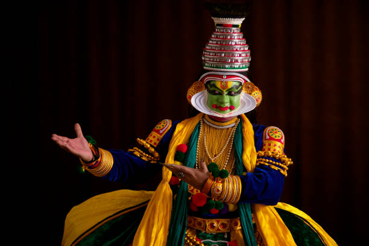

KathakaliThe Dramatic Dance of Kerala |
|  |
About Kathakali:Kathakali is a traditional dance-drama form of Kerala, renowned for its elaborate costumes, makeup, and facial expressions. It combines dance, music, and acting to narrate stories from Hindu mythology, primarily from the Mahabharata and Ramayana. |